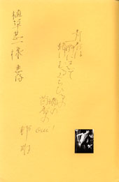

私が古本屋になったばかりの頃、業者の入札会に植草甚一の旧蔵書がどっと出てきたことがある。一九八〇年、いやその翌年だったのか、よく晴れた平日だった。
今なら、ちょっとしたニュースになるかもしれない。でも、あの頃は特に話題になることもなかった。「均一ばかりを買ってた人だよ」、入札会の会場で先輩の業者が教えてくれて、側にいた初老の古本屋さんは、にこにこしながらうなずいていた。その日の記憶はとても静かなものだ。
つい先日、古くから洋書を専門にしている古本屋さんに「今だったらあの植草蔵書はもっと話題になりましたか」と尋ねてみた。「逆だよ。あの頃だったからまだ出来たんじゃないの。今じゃ出来ないよ」。出来るというのは、入札会でそこそこの値になるということだ。あのてのペーパーバックスは、今では本当に売れないのだそうだ。
そういえば、どっと出ていた蔵書がどんなものだったのか、私にははっきりとした記憶がない。あの頃、私は本当に駆け出しで、自分が知るごく限られた範囲の外側は、ただ本がたくさんあるという印象でしかなかったからだ。でも、その日に見た本で、一冊だけずっと忘れないでいたものがある。
戦後前衛短歌の旗手といわれた塚本邦雄の歌集『感幻楽』（一九六九年）。その植草甚一に献じた一冊だ。
 この歌集が「幻の歌集」だというのではない。ただ、ちょっと（いや、私にとってはとても）変わった一冊だった。というのは、植草甚一へ宛てた献呈署名の横に小さな白黒写真が貼られていて、そこに真正面を向いた全裸の男性が写っている。それは塚本自身だったのだろうか。私の記憶の中では塚本だった。
なんと正直なメッセージだろう。私は、塚本邦雄や植草甚一の熱心な読者ではなかったけれど、目の前にある本の、その生々しい雰囲気がとても魅力的に思えた。
古本屋になると、こういう本に出くわす。「こういう本」というのは、どこかの書斎から運び出され、まだその人の気配が貼り付いたままの本だ。
古書の世界には、珍しい本や美しい本、内容の優れた資料などいろいろあるけど、残された「気配」をまるごと買ったり、売ったりすることもあるのだと知った。そう言うと、身も蓋もないようだが、でもそれは古本ならではことなのだ。
あの本に私も入札をしたのだろうか（なにしろ駆け出しのスカンピンだ）。誰が、いくらで落札したとか、実はそんなことを何も覚えていないのだ。本を見ながら驚いているところで、私の記憶は途切れてしまっている。
今年（二〇〇五年）の九月十九日。駿河台下の東京古書会館では近代文学書の入札会が開かれていた。いつものように出品の古書を端から見ていると、なんとあの本があった。植草甚一宛の献呈署名が入った『感幻楽』。写真もそのままだ。
もちろん忘れるわけがない。今までも、塚本が植草に宛てたこんな歌集を昔見たことがあると、私はことあるごとに吹聴してきた。自慢である。たいていの古本屋さんは、昔こんな珍しい本を買ったとか売ったとかをいつまでも自慢するもので、「見た」ぐらいのことで二十五年は引っぱらないものだ。
そうやって忘れなかった本が、今目の前にある。そうか、持っていた人は手放したのか。そう思うと、顔も名前も知らないその旧蔵者に私は不思議な懐かしさを感じた。
その日、私は植草甚一宛の歌集『感幻楽』を落札した。「ずいぶん張り切って買ったね」と同業からひやかされた。「張り切って買う」というのは、「おいおい、あんなに高く買って大丈夫かよ」という意味だ。「宛先がよかったから」、私はそう応えた。きっと、嬉しそうに応えたはずだ。なにしろ、古本屋になったばかりで、ただ驚いてこの本を見ていたあのときの自分自身をようやく買い戻したのだから。
ところで、小さな白黒写真に写っていた男性は塚本邦雄ではなくて、ずっと若い別人だった。人は勝手なもので、自分が若ければ前衛短歌の旗手も兄ほどしか歳は違わないと感じていたらしい。この歌集が出た一九六九年、塚本はもう四十九歳、植草は還暦を迎えていたのだ。それから十年が経って植草は逝き、翌年この本は古書市場に姿を見せる。そのとき私は二十五〜六歳（ようやくという感じだ）。そして、続く二十五年はたちまち過ぎていった。
「青春は一瞬にして髭けむるくちびるの端の茴香のｏｕｉ！」。
小さな白黒写真の横には、塚本の端正な自筆でこんな歌が書き残されている。
（この項つづく） |